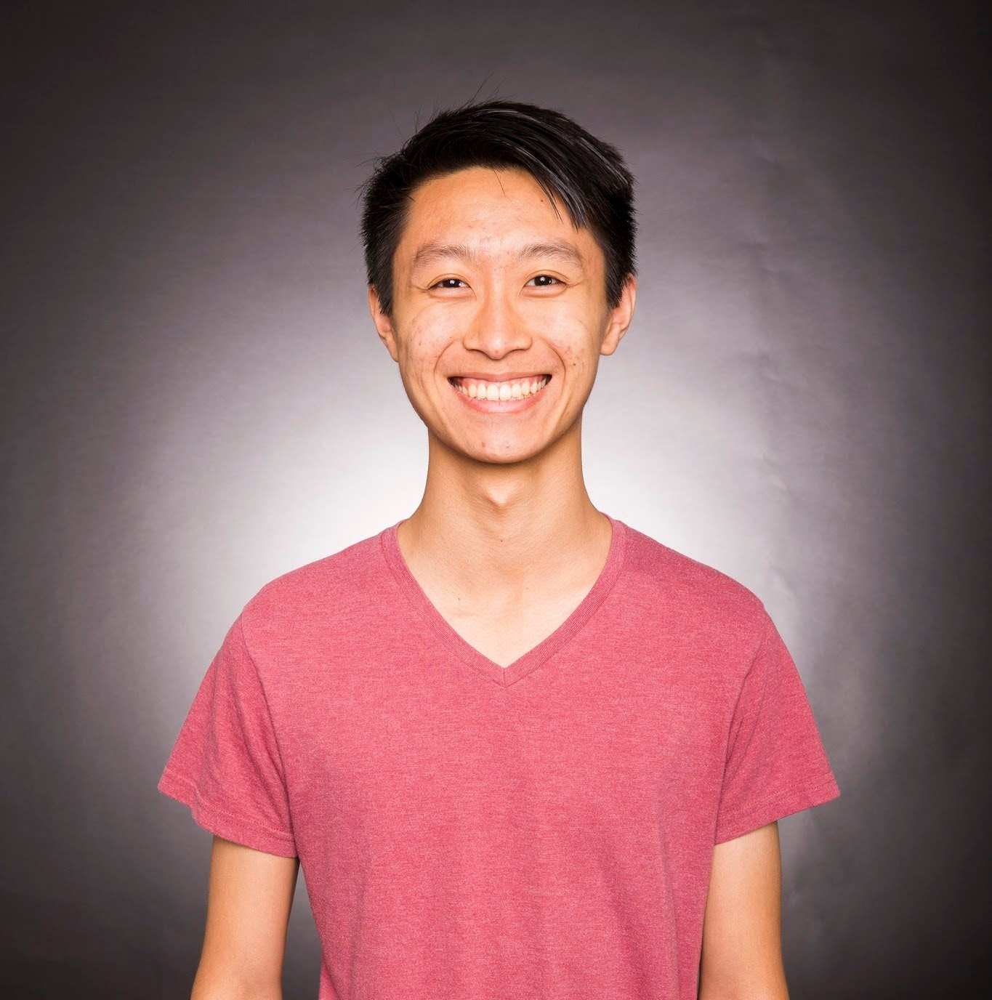

<div class="mdl-layout mdl-js-layout mdl-layout--fixed-header">
  {% include header.html %}

  <main class="mdl-layout__content">
    <div class="page-content">
      <h1 style="font-size: 400%; font-weight: 400; text-align: center" class="title">Hi, I'm Austin.</h1>
      <h3 style="font-size: 200%; font-weight: 400; text-align: center" class="title">I'm a student, teacher, software engineer, and gamer.</h3>

      <div style="text-align: center"></div>

      <h3 style="font-weight: 400; font-family: Oswald">About Me</h3>
      <div style="font-size: 175%">
        <p class="about">In September 2019, I will joining Adobe as a software engineer working on prototyping and rendering for <a href="https://www.adobe.com/products/xd.html" target="_blank" class="link">Adobe XD</a>, which enables UX designers to create increasingly immersive user experiences.</p>
          
        <p class="about">Previously, I received my Master of Engineering in <a href="http://cs.princeton.edu" target="_blank" class="link">Computer Science </a>from Princeton University and my Bachelor of Science in Electrical Engineering & Computer Science from UC Berkeley. All throughout, I was heavily involved in teaching undergraduate computer science courses as a teaching assistant, and received several awards for my engagement, dedication, and enthusiasm in computer science education.</p>

        <p class="about">My academic and career interests are in real-time and interactive visual computing in computer graphics and computer vision. I'm especially fascinated by modern applications in immersive experiences such as virtual/augmented reality, autonomous driving, video games, and entertainment. I'm excited to see how we can continue to push the boundaries of these fields to improve day-to-day life and create exciting new visual and interactive experiences for everyone.</p>

        <p class="about">In my free time, I am a midcore PC gamer and try to make time for it in my weekly schedule. Currently, you can find me on an epic journey on Old School RuneScape. In general, I love online multiplayer games! Besides gaming, I spend my downtime reading, watching anime, learning Japanese, and trying to get into better physical shape. When I can find a large enough contiguous chunk of time and the funds, I also love to travel!</p>
      
      </div>

      <h3 style="font-weight: 400; font-family: Oswald">Contact Info</h3>
      <div style="font-size: 175%">
        <p class="about">I am best reached by email at austin.h.le (at) gmail (dot) com, or alternatively through <a href="https://www.linkedin.com/in/austinhle" target="_blank" class="link">LinkedIn</a>. You can also find me on <a href="https://twitter.com/austinhle" target="_blank" class="link">Twitter</a>!</p>
      </div>
    </div>
  </main>
</div>
